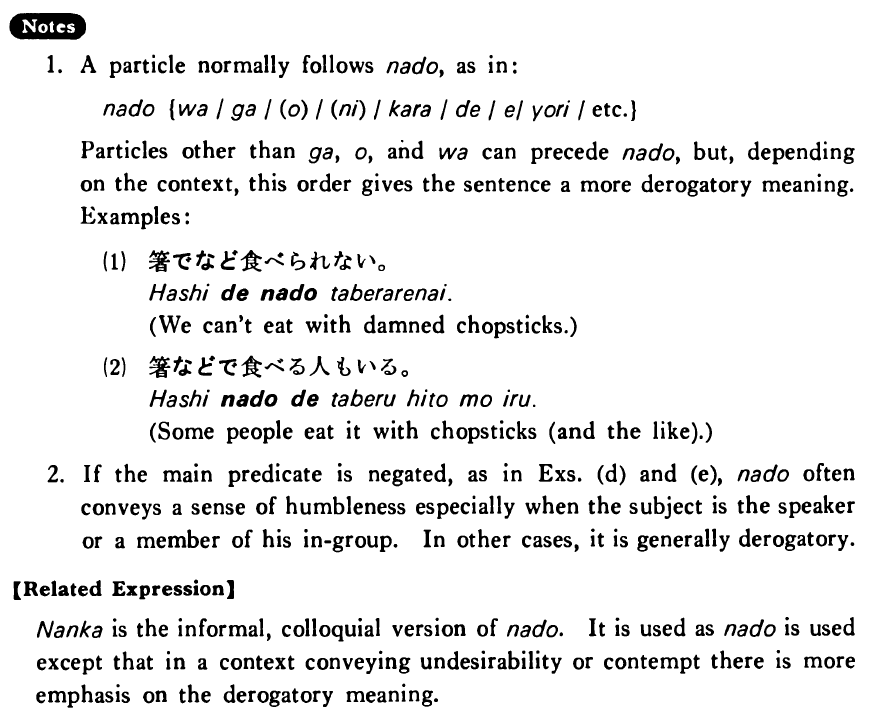

など (B. 267)
- (ks).
- 日本の食べ物の中では寿司や天ぷらなどが好きだ・好きです。
- Among Japanese foods I like things like sushi and tempura.
- (a).
- A:冬休みはどこに行きましょうか。 B:ハワイなどどうですか。
- A: Where shall we go during the winter vacation? B: How about Hawaii, for example?
- (b).
- 大学ではフランス語やドイツ語などを勉強した。
- In college I studied French and German and the like.
- (c).
- この大学には中国や韓国などから学生が大勢来ます。
- A lot of students from China, Korea and so on come to this college.
- (d).
- A:経済学を専攻するつもりですか。 B:いいえ、経済学など専攻するつもりはありません。
- A: Are you going to major in economics? B: No, I have no intention of majoring in things like economics.
- (e).
- A:この翻訳をして下さいませんか。 B:こんな難しいもの、私などには出来ません。
- A: Could you kindly translate this for me? B: A person like me cannot translate such a difficult thing.
